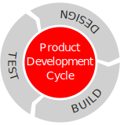

Quantitative Analysis
This section provides information about an important type of analysis used broadly by scientists.
What do you know about quantitative analysis?
Definition
Quantitative analysis (QA) is, briefly, a type of study performed to count the quantity of a particular item. This may be performed to measure the strength of an effect or perhaps membership in some group. QA methods are often used to answer the question “To what extent is group A different from group B?”.
When is a time when you had to measure something?
The Role of QA
Design-Build-Test Cycle
You may recall the cycle of product development that involves three major phases:
- Designing: a creative phase using a variety of models (and input from testing if available)
- Building: another creative phase using a refined model and input from the design phase
- Testing: an analytical phase that is inherently critical of the model

Where do you think engineers usually start this cycle?
Where in this cycle is information important?
How is information used for design, for building, and for testing?
Storytelling
The ability to tell a good story is an important skill in research!
What do you think about this statement?
What kinds of stories do scientists tell and to whom do they tell them?
Methods
Quantitative analysis fits into product development as part of the testing phase. Assuming you already have data, you can now try to make sense of your information. If you have a research question, you can determine the extent to which your data agree or disagree with your model. For example, if you suspect that the addition of a special sequence of DNA into bacteria will allow the cells behave differently, you might want to test your numbers to determine if you can be confident in a claim that the modified cells are indeed different due to the special DNA and not by chance. This leads into the area called statistics and helps researchers answer the general question “How do you know?”.
What are some ways researchers can measure?
We can use our senses to detect movement, color, light intensity, odors, sounds, pressure, and tastes. We can use sensors to detect a variety of signals. Can you think of some simple or complex tools used to measure?
How can we record and store our measurement information (called data)?
Simple data can be recorded on paper but more complex systems record information directly to a digital medium. We can also record information as images, sounds, and in other formats. Did you know some scientists are working to store information in DNA?
Statistics
The field known as statistics is “a branch of mathematics dealing with the collection, analysis, interpretation, and presentation of masses of numerical data.” (Merriam-Webster 2020)
Visualization
Figure 3: Credit: Unknown
Information Visualization or Data Visualization is the practice of telling a story about data through images.